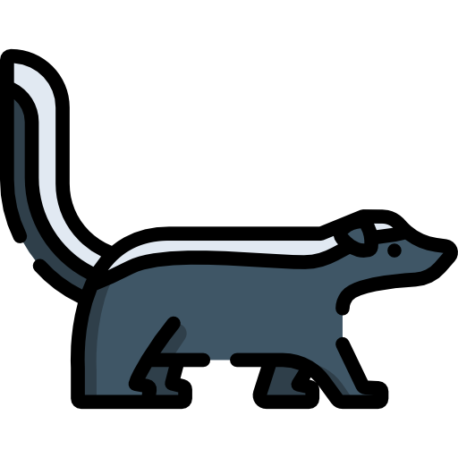

Minesweeper is a game that starts out with a grid of unmarked squares.
Some squares are safe to click but others are bombs!
If you click a bomb, game over.
If you click a safe square (20), it will reveal a number. The number is how
many bombs are 'neighboring' that square: to the top, bottom, left, right,
and both diagonals. It's your job to use the numbers to figure out which
of the unmarked squares have bombs and which are safe to click.
If you suspect a square is a bomb, then flag it using the Flag Button.
Click the Flag Button and then click on the square that you think is a
bomb.
Once all bombs (5) are flagged, game won!
So what's the twist?
Before you play, select a game board theme below.
Each one has its own own "bomb" to avoid and its down "flag" as a way to
mark the sqaures that are bombs.
Watch out!
There are monsters lurking in the woods.
To cut the monsters
down with a chainsaw, place a flag on the squares they're hiding
behind. But be careful you don't click their hiding spot before
flagging it. They're hungry for humans!
On the Run!
You robbed a bank but now you have to getaway.
To avoid getting caught,
wear a disguise by placing a flag on the squares where the cops are
staked out. But be careful you don't click their stakeout spot before
flagging it. They'll take you to jail!

What's that smell? Skunks!
To capture the skunks
with a carrier cage, place a flag on the squares they're hiding
behind. But be careful you don't click their hiding spot before
flagging it. They're ready to spray anyone who disturbs them!